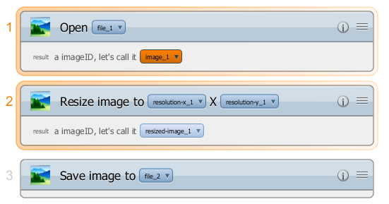
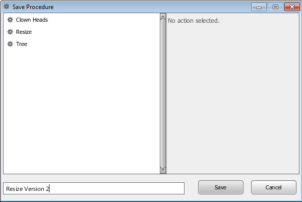
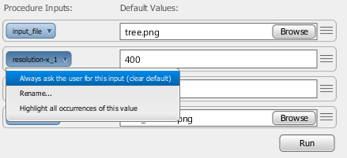
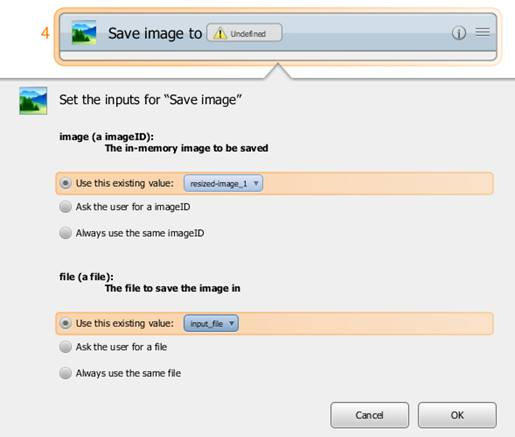
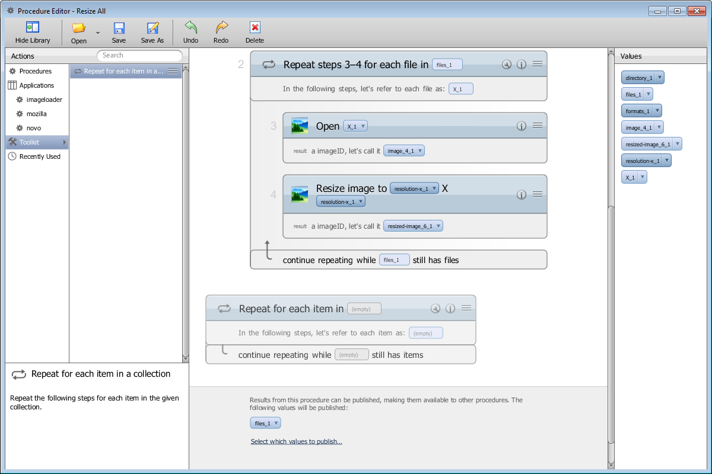
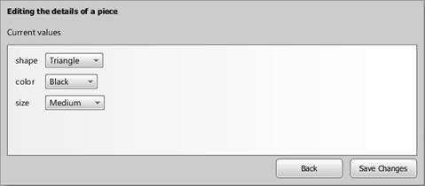

Adept Procedure Editor Guide
Table of Contents
A Tour of the Procedure Editor
Adding Steps (Actions) from a Library
Overview
The Procedure Editor allows Adept users to view, edit and create procedures. Without the ability to visualize a procedure, a user may struggle to comprehend the flow of a procedure, its inputs and outputs and its overall effect on client applications. The Editor addresses these problems by presenting procedures in a human-readable manner. Once a user is able to understand his or her procedure, they may wish to modify the procedure to better match their intent or to conform to changing requirements. The Editor addresses these needs.
The Procedure Editor opened to the ‘Resize’ procedure from the Adept User Guide.
Key Benefits
The Procedure Editor allows procedures to be understood and modified. This provides the following key benefits:
- The ability to understand how a procedure will affect client applications
- The ability to modify a learned procedure to better match the user’s intent
- The ability to maintain a procedure as requirements change
- The ability to derive new procedures from existing procedures without demonstration
- The ability to share and collaboratively develop procedures
These benefits are facilitated by specific features in the Editor, each of which is discussed in subsequent sections of this document.
A Tour of the Procedure Editor
The following image depicts the main components of the Procedure Editor application. A key is provided below the image that identifies each component and describes its purpose.
Main components of the Procedure Editor.
- The Toolbar: Allows users to open procedures, create new procedures, save changes and undo/redo edit operations.
- The Library: Organizes all actions and procedures that could be added as a new step during an edit session.
- The Info. Panel: Provides detailed information about the action currently selected in the Library, including its name, description and information regarding its inputs and outputs.
- The Procedure Header: Displays the name and description of the currently open procedure. Displays and allows for configuration of the procedure’s inputs.
- The Procedure Body: Shows the steps taken by a procedure. Allows for steps to be added, deleted or moved.
- The Value Panel: Lists the variables used in a procedure and provides discovery mechanisms.
- The Procedure Footer: Shows the published results of a procedure and allows for their modification.
Opening Procedures
Procedures are opened using the “Open” button on the Editor’s main toolbar. The “Open” button also allows for the creation of new procedures and procedure import.
The options available from the “Open” button.
Selecting to “Open” a procedure will cause a new window called the “Procedure Browser” to open. The Procedure Browser displays all known procedures and allows for one to be selected for opening in the main Editor window. Several management functions are also available from the procedure browser’s “Actions” button: delete, rename, export and import of procedures.

The Procedure Browser window.
Upon selecting a procedure and pressing the “Open” button, the selected procedure will open in the main Editor window. The Values Panel on the right will become populated with the variables used by the procedure. Note that the Editor window can be resized to allow for more space for the procedure’s visualization. Users may wish to hide the Library Panel on the left by clicking the “Hide Library” button on the toolbar.
The “Hide Library” Button.
Exploring Procedures
Adept users have several tools available to aid in exploring a procedure. The title, description and inputs to a procedure are displayed clearly in the Procedure Header and serve as the primary introduction to a procedure.
A close-up of the header of the ‘Resize’ procedure.
Users can then scroll through the individual steps taken by a procedure and inspect the details of each step. Each step has a title which will contain the most useful inputs to that step. Each step furthermore has an “Information” button which will expand the details of that step including a formal name, description and any inputs not mentioned in the title. If the step produces any outputs they are listed at the bottom of the step, regardless of whether the Information panel is expanded.
An unexpanded step from the ‘Resize’ procedure. Notice the Information button (marked by the red arrow).
The same step with its Information Panel expanded.
Each procedure and step input is represented by a variable, which has a name (e.g., file_1) and a value (e.g., tree.png). Procedure and step outputs are similarly represented by variables. Each variable is clickable to reveal a menu of options for that particular variable. Every variable provides an option to “Highlight all occurrences” of the variable within the procedure. This option is useful when attempting to understand a variable’s role in a procedure as any visible occurrences of the variable will become highlighted and any steps that reference the variable will become selected. The latter behavior of step selection is useful in the event that the variable is referenced by a step but the reference is either hidden by the Information panel for that step, or because the variable reference is nested within a structure or collection.

The “Highlight all occurrences” option that appears on all variables.

Upon selecting “Highlight all occurrences”, references to image_1 become highlighted. Notice that step 2 is highlighted because of a reference to image_1 hidden within the Information Panel.
Another useful tool for exploring procedures is the Values Panel, which illustrates all of the variables that appear in the procedure either as procedure inputs or outputs from individual steps. This panel allows variables to be accessed without finding references to them within the procedure. The buttons in the Values Panel provide Highlight functionality, as well as the ability to drill-down to the origin of a variable or rename it.
The menu options available for variables in the Values Panel.
General Editing Tools
Before describing the specific editing features provided by the Editor, it is necessary to describe the general mechanisms it provides to make editing easier. A familiar feature to most users is the ability to undo and redo their edits as necessary. This is accomplished in the Editor using the Undo and Redo buttons on the main Toolbar. Hovering the mouse over these buttons will provide a description of the action that will be retracted or reenacted.
The Undo and Redo buttons.
The Editor also makes it easy to save a backup of a procedure before making any edits by clicking the “Save As” button. Clicking this button allows the procedure to be saved under a new name. When the save dialog is dismissed by clicking the “Save” button, the Editor will be opened to a newly created copy of the procedure.

The Save Procedure dialog triggered by the “Save As” button.
Modified procedures can also be saved under new names using the “Save As” button. This makes it easy to test changes without affecting the baseline. This feature also makes it easy to derive new procedures from existing procedures.
A Simple Edit Scenario
Exploring a procedure assists in understanding it, which makes it possible to edit the procedure to achieve a wide range of goals. Some edit operations supported by the Editor affect the operation of a procedure while others serve to increase the readability of a procedure. A readable procedure is generally easier to edit and share with others. Thus, readability edits serve as a good introduction to editing.
The editor provides three editing functions in support of readability:
- Procedure Rename: Renames a procedure as well as any references to it from other procedures. A good name briefly describes a procedure and distinguishes it from similar procedures.
- Procedure Description Editing: Allows a user to specify a textual description for a procedure. Good descriptions will describe the intent of the procedure as well as an overview of its operations.
- Variable Rename: Allows variables to be renamed to better reflect their purpose in the procedure. Although Adept uses information from the action model to generate appropriate variable names, a user may be able to provide a more descriptive name.
The readability of the ‘Resize’ procedure from the Adept User Guide could easily be improved. First, let’s rename it ‘Resize Image’ so that other users know what is being resized. A procedure can be renamed from the Procedure Browser window that opens when the “Open” button on the main Toolbar is pressed. A quicker way to rename a procedure is using the rename link that appears in the procedure header. Clicking the rename link will open a dialog similar to the one triggered by the “Save As” button. However, rather than creating a copy, the rename link will rename the procedure in place.
The rename link, which opens the “Rename Procedure” dialog.
Note that the rename is immediately reflected in the application window title and the procedure header. Renaming a procedure implicitly saves it, and if the procedure being renamed is referenced by other procedures as a step, those references are automatically updated.
Next, let’s rename the input variables “file_1” and “file_2” to the more descriptive “input_file” and “output_file”. Variables can be renamed from anywhere they are referenced, except when nested inside of structures or collections. To rename the inputs, simply click on them in the procedure header or somewhere where they appear in the body of the procedure and select the “Rename” option.
The Rename option that appears on variables.
The Rename Dialog. The dialog will ensure that all variable names are unique.
Lastly, let’s provide a description so that if we export this procedure and share it with another Adept user they can quickly understand its intent. To provide or edit a description, simply place the cursor in the Description textbox that appears in the Procedure Header and enter the appropriate text.
The procedure description textbox.
Now that we’ve finished our readability edits, it’s time to save our changes. Simply click the “Save” button on the main Toolbar to save the procedure in place.
Rewiring Values in Steps
Rewiring values refers to modifying how values and variables are used and referenced in a procedure. There are three ways to rewire values, where a value is defined as a procedure input variable, a step output variable or a fixed (constant) value:
1. Replace a value with a reference to an existing variable (procedure input or step output)
2. “Ask the user for this value” which has the effect of creating a new procedure input for that value
3. “Use a fixed value” which allows a fixed (constant) value to be specified for a single input on a specific instance of a step.
The ability to rewire values is useful in many situations. Consider the case where a mistake is made during demonstration that causes Adept to miss an intended generalization. Option 1 from above can be used to create the missing generalization. Another use case is when Adept makes an incorrect generalization that needs to be repaired. Options 2 or 3 can be used to repair the generalization. Options to rewire values only appear on values contained within specific steps, not from the Procedure Header or Values Panel, because rewiring a value only operates on a single instance of a value or variable at a time. The “Highlight All Occurrences” and “Show First Occurrence” are very useful when rewiring values.
For example, consider the ‘Resize Image’ procedure. Perhaps the demonstration was intended to demonstrate a procedure where the resized image was square, but due to a mistake it is rectangular. This problem can be addressed by replacing the reference to ‘resolution-y_1’ with ‘resolution-x_1’. This will cause ‘resolution-x_1’ to be used for both the length and width of the resized image.
Changing a reference to resolution-y_1 to resolution-x_1.
After rewiring resolution-y_1 to point to resolution-x_1, a warning icon will appear next to the procedure input resolution-y_1 indicating that it is no longer used by any step in the procedure. You can choose to either leave it intact or remove it by clicking the warning icon.
A warning indicating that resolution-y_1 is no longer used.
If you remove the resolution-y_1 input, but later wish to make it possible to resize the image to be rectangular again, you can easily recreate the procedure input by going to the ‘Resize Image’ step and choosing to ‘Ask the user for this value’ for one of the references to resolution-x_1. This will create a new procedure input called something like ‘resolution-y 1’ which allows for the length and width of the resized image to be resized independently.
Replacing a value with a new procedure input. The current value may already be a procedure input as in this example.
For our last example, let’s assume that you want to simplify the Resize Image procedure to always resize images to be 100 x 200 and no longer want to accept the length and width as procedure inputs. This is accomplished by providing fixed values.
Changing a value to be a fixed value.
Upon choosing “Use a fixed value”, a dialog will appear that allows for a constant value to be specified.
Fixed value configuration dialog.
If this is done for both inputs to the Resize image action, there will no longer be a need for the size procedure inputs. Once again a warning icon will appear next to them in the Procedure Header that allows for their removal.
Editing Procedure Inputs
Procedure inputs can be edited in several ways to improve the usability of a procedure. Each procedure input has the concept of a ‘default value’. The default value of a procedure input will be provided to the user when they run the procedure from the Adept UI. Users can either accept the default value or override it with their own value. It is possible from the Editor to toggle between providing a default value or not. You may wish to omit a default value for an important procedure input that should always be specified by the user.
To clear the default value of a procedure input, simply select ‘Always ask the user for this value’ from the input’s context menu.

Clearing the default for a procedure input.
You can also modify the default value for a procedure input. The way in which this is accomplished differs based on the type of the input being configured. For instance, if you want to configure the default value of the ‘input_file’ input, click the Browse button to open a file chooser dialog. If you want to change the default width of the resized image from 400 to some other value, simply edit the value 400 in the textbox.
If you have cleared the default value for an input and now wish to reinstate it, choose the ‘Provide a default value’ option from the input’s context menu.
Providing a default value for an input that doesn’t have one.
It is also possible to reorder the inputs to a procedure. This is indicated by the “knurling” which appears on the right of each procedure input. Knurling is used throughout the Editor to indicate that something is interactive and can be dragged. You may wish to reorder the inputs to a procedure to have a more logical flow. For the purposes of this example, let’s move the output_file input directly below input_file. Click and drag the input on its knurling or any other vacant space on the procedure input to begin reordering the inputs.
Reordering procedure inputs.
Adding Steps (Actions) from a Library
Adding new steps is a useful way to adapt a procedure to changing requirements, or derive new procedures from existing procedures without the need for demonstration. Steps are added from the Library Panel which appears on the left side of the Editor application window. The library groups actions that can be added as steps by whether or not they are procedures and also by application. If we select “imageloader” under the “Applications” menu, then we will only see the actions known to Image Loader.
The Library Panel displaying only Image Loader actions.
For an example of adding a step, let’s assume that we want to modify the Resize Image procedure so that in addition to saving a resized copy of the input image, we also want it to save the resized image to the input file directly. To do this, we need to add another ‘Save image’ step at the end of the procedure. Notice that if you select ‘Save image’ in the library, knurling will appear on its right side indicating that it can be dragged.
The ‘Save image’ action selection.
Begin dragging and a step visualization will appear and follow your mouse. Drag the new step to the bottom of the procedure. If the location you wish to drop the step on is not visible you can cause the procedure scroll pane to scroll by moving your mouse to the extreme top or bottom of the procedure view pane to cause it to scroll up or down respectively.
Dragging a new step in to a procedure.
If the step being added does not require any inputs, you simply release the mouse and you’re done adding the step. If the step does contain inputs, such as ‘Save image’ the Editor will provide a step configuration dialog when the mouse button is released to finish the drag.

A step configuration dialog.
The options presented by the step configuration dialog should appear familiar from the value-rewiring example. For each input of the new step you can either use an existing variable if there are any, ask the user to provide the variable as a new procedure input, or provide a fixed value. To achieve the desired effect, we should use ‘resized-image_1’ for the first input and ‘input_file’ for the second input, which is the file to be saved. Once each input is configured, click OK to finish adding the step.
The last editing example is a good example of where it might be better to save your changes under a new name rather than modifying the procedure in place. Doing so will provide two useful procedures: one for resizing an image and saving the result to a copy, and one that performs the same actions and also saves the original image in place.
It is worth noting that entire procedures can be added as steps without any additional burden as compared to adding normal steps. To add a procedure as a step, open the ‘Procedures’ group in the Library Panel and drag the procedure as you would a normal step. Utilization of this feature, in conjunction with running procedures during demonstration, allows reuse of procedures, which can save significant time and lead to a less redundant and more maintainable library of procedures.
Moving Steps
Steps can easily be moved and therefore reordered using the Editor. This is indicated by the knurling in the upper right-hand corner of each step. A step can be dragged either by its knurling or any unoccupied space in its header.
Hover the mouse over a step’s knurling to see that it can be moved.
It is possible to move multiple steps at once. In order to do this you must select multiple steps. This can be accomplished by holding the Control key while clicking multiple steps, or by clicking in the whitespace of the procedure view and starting a selection rectangle.
Selecting multiple steps with a selection rectangle.
Once you have selected multiple steps, choose one of them and begin dragging it as you would a single step. The steps will be collapsed in to a single step visualization as you drag them.
Dragging multiple steps.
Deleting Steps
Deleting steps is similar to moving them. However, you have a choice in how you delete steps. Steps can either be deleted by dragging them off of the procedure view pane, or by selecting them and clicking the delete button on the main Toolbar.

Deleting a step by dragging it off of the procedure view pane. The step will be deleted if the procedure view pane is no longer reserving space for it between steps.
Deleting a step explicitly with the Delete button.
Similar to moving steps, multiple steps may be deleted through either the drag mechanism or the delete button by selecting multiple steps using the Control key or a selection rectangle.
Warnings, Errors, and Fixes
Errors can occur when the deletion or movement of a step causes illegal variable references; where a variable is referenced that either does not exist or has not been created yet. If this happens, error icons promptly appear on any steps with problems, and a notification appears on the Editor’s main toolbar. However, it is not necessary to resolve the errors immediately since the errors may be temporary as multiple editing steps are taken. Upon clicking a step’s error icon, a description of the problem is displayed as well as a list of possible solutions including undoing the last action. In this way, it is easy to recover from errors but is still possible to delete and move steps fluidly.
To see an example of an error correction dialog, move step #3 ‘Save image’ from the Resize Image procedure to the second step position in the procedure, before the ‘Resize Image’ step. This causes a problem because ‘Save image’ relies on the output of Resize Image. Clicking the error icon on ‘Save image’ will cause an error correction dialog to appear.
An error correction dialog, triggered by clicking the error icon in the upper right-hand corner of the step.
The Editor disallows saving a procedure until all errors have been resolved. However, it is possible to save the procedure if only warnings exist in the procedure. A warning indicates a problem or inconsistency in a procedure that is probably benign and need not be corrected. The most common type of warning is an unused procedure input. Such inputs can either be removed by clicking the warning icon, or left intact for possible future use.
Loops
As described in the Adept User Guide, it is possible to learn procedures that contain loops. Loops are very powerful tools and can be configured in the Editor. It is also possible to add a loop from the Editor if a collection type variable exists in the procedure.
To see how a loop looks in a procedure, let’s look at the ‘Resize All’ procedure described in the Adept User Guide.
A loop step from the ‘Resize All’ procedure.
Loop steps can be moved and deleted just like normal steps. If you select a loop step, all of its sub-steps are implicitly selected. A loop can be configured by clicking on the Configuration button that is circled in red in the above image. From there you can configure which collection variable is looped over.
A loop configuration dialog.
Note that by changing the collection variable being looped over you may change the type of the iterand, which is the variable that represents each item from the collection as the loop is running.
Adding a new loop is accomplished in the same way as adding any other new step: by dragging from the Library Panel. The loop is located in the ‘Toolkit’ portion of the library. Drag the loop just like you would any other step and configure it upon dropping it in the procedure view pane.

Adding a new loop from the library
Structures and Collections
Previously in this guide we discussed providing fixed values for step inputs as well as procedure input default values. One detail that was not discussed is editing fixed values for structure and collection data types. Given the additional complexity of structure and collection types, editing them requires a few additional steps. Both structures and collections are represented by buttons in procedure inputs. The button will give a preview of the contents of the structure or collection, but in order to view all of the details you must click the button. For example, consider the following procedure that creates a Tree assembly in the Novo sample application.; here, piece_1 is a structure input.
A procedure with a structure input.

A structure editing dialog that shows all details of a structure and allows them to be edited.
For an example of a collection input, consider the ‘formats_1’ input of the Resize All image loader procedure. It also appears as a button in the Procedure Header.
A collection input.
A collection editor dialog. Notice the link for adding new values.
Limitations
While the Editor is a powerful tool for task learning and end-user programming, there are a number of useful features that have yet to be implemented. The following is a list of unimplemented features and limitations:
- Provide the user with the ability to print a procedure
- Allow the user to configure loops over collections that they create, rather than existing collection values in a procedure
- Provide more UI widget support for common data types
- Allow the user to configure their own function calls on collections and structures